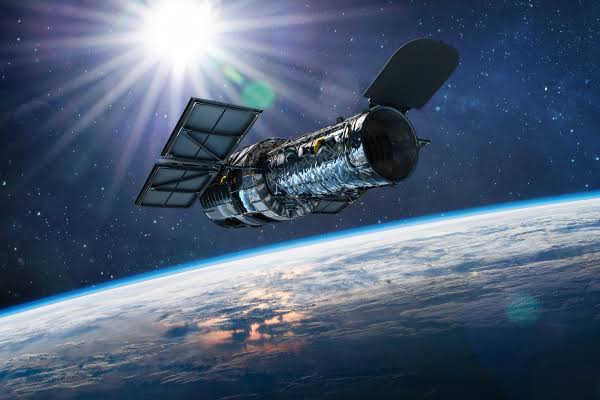
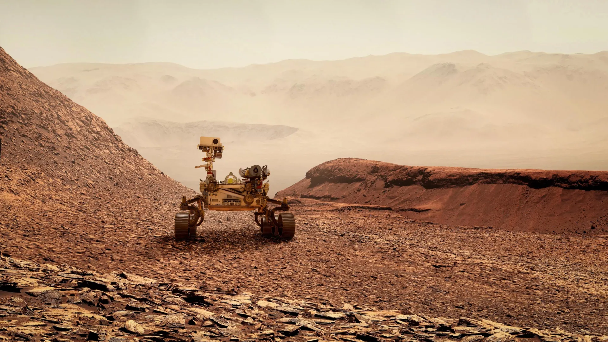
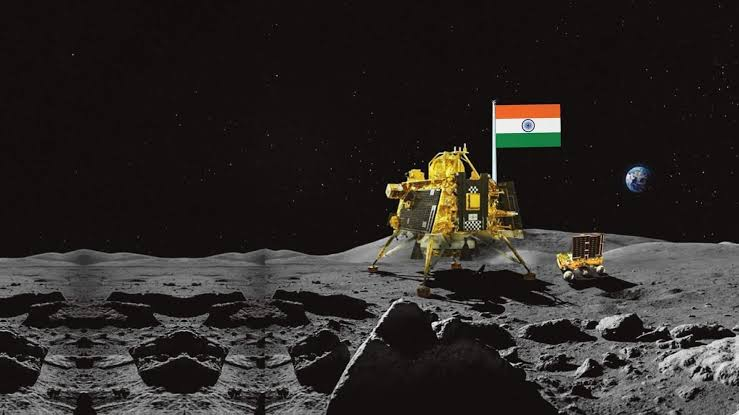
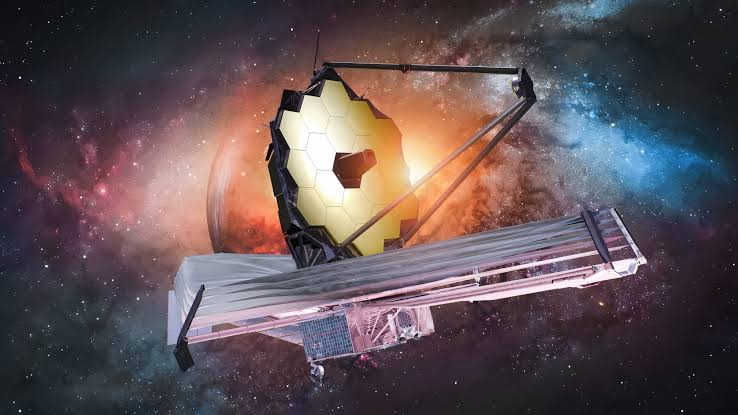

Apollo 11
Neil Armstrong and Buzz Aldrin became the first people to walk on another world while Michael Collins orbited above.
Achievement: First crewed landing on the Moon.
Milestones in exploration
Bold ideas became spacecraft, observatories, and footprints—each one expanding the limits of what we know.
Neil Armstrong and Buzz Aldrin became the first people to walk on another world while Michael Collins orbited above.
Achievement: First crewed landing on the Moon.

Twin probes toured the outer planets and continue to send data from beyond the edge of the Sun's protective bubble.
Achievement: First spacecraft to enter interstellar space.

Hubble's sharp view above Earth's atmosphere transformed astronomy with iconic images and precise observations.
Achievement: Helped measure the age and expansion of the universe.

A permanently crewed laboratory where nations work together to study life, materials, and technology in microgravity.
Achievement: Decades of continuous human presence in low Earth orbit.

From Sojourner to Perseverance, rovers have crossed ancient lakebeds and read the planet's geological history.
Achievement: Found strong evidence that ancient Mars once held liquid water.

India's lunar programme mapped the Moon, helped confirm water molecules, and reached the southern polar region.
Achievement: Chandrayaan-3 achieved India's first soft landing on the Moon.

JWST observes the universe in infrared light, peering through cosmic dust and far back into cosmic history.
Achievement: Reveals early galaxies and studies exoplanet atmospheres.